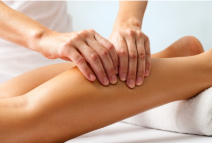
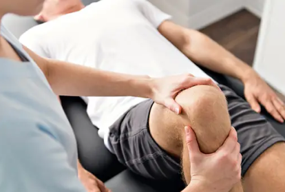
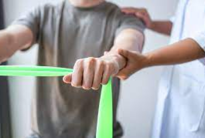
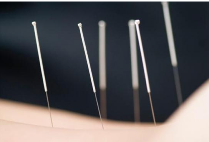
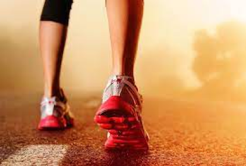

Tratamientos
-

Drenaje linfático manual
El drenaje linfático es una técnica de masaje suave que se utiliza para estimular el sistema linfático, el cual es responsable de eliminar los desechos y toxinas del cuerpo. Este está formado por una red de vasos y ganglios que se encargan de recoger y filtrar el líquido linfático. El profesional aplica movimientos suaves y repetitivos, para ayudar a desbloquear los ganglios, facilitar la eliminación de toxinas y desechos del cuerpo. Este tipo de masaje es especialmente útil en personas que sufren de retención de líquidos, edemas, celulitis, piernas cansadas, entre otros. Es importante destacar que el drenaje linfático debe ser realizado por un profesional capacitado y certificado, ya que requiere de conocimientos específicos para poder ser aplicado de manera segura y efectiva.
-

Kinesiología
La kinesiología es una disciplina que se encarga de estudiar los movimientos corporales y su relación con la salud y el bienestar del individuo. A través de diversas técnicas, la kinesiología busca mejorar la función muscular, la movilidad articular, la postura y el equilibrio. La kinesiología se utiliza para una amplia variedad de fines, incluyendo: rehabilitación, prevención de lesiones, mejora del rendimiento deportivo, tratamiento de trastornos neurológicos y mejora de la calidad de vida en la tercera edad.
-

Masaje descontracturante
Un masaje descontracturante es un tipo de masaje terapéutico que se centra en la eliminación de las contracturas musculares. Las contracturas musculares son una tensión excesiva y persistente en las fibras musculares que puede generar dolor, inflamación e incluso limitar la movilidad. Durante un masaje descontracturante, el terapeuta aplicará técnicas de masaje específicas para trabajar los puntos de tensión muscular y las contracturas. Esto incluye movimientos de amasamiento, fricción, estiramiento y presión en los puntos clave, con el objetivo de liberar la tensión acumulada en los músculos y mejorar la circulación sanguínea y linfática. Los masajes descontracturantes pueden ser beneficiosos para personas que sufren de dolores musculares, tensiones, rigidez o fatiga muscular. También pueden ser útiles para personas que realizan actividades físicas de alta intensidad o que tienen una postura incorrecta en su trabajo o vida diaria.
-

Rehabilitación
La rehabilitación kinesiológica se enfoca en el diagnóstico y tratamiento de lesiones musculares, de ligamentos y tendones, problemas de columna vertebral, trastornos neurológicos, entre otros. El kinesiólogo evalúa al paciente, determina las causas y el alcance de la lesión o trastorno y desarrolla un plan de tratamiento individualizado que incluye ejercicios terapéuticos, terapia manual, electroterapia y otras técnicas de tratamiento. El objetivo de la rehabilitación kinesiológica es restaurar la funcionalidad física del paciente, mejorar la movilidad, reducir el dolor y prevenir futuras lesiones. Además, la rehabilitación kinesiológica no solo se enfoca en la recuperación física del paciente, sino también en su bienestar psicológico y emocional, ya que la lesión o trastorno puede afectar la calidad de vida y el estado de ánimo de la persona.
-

Acupuntura
La acupuntura es una técnica de la medicina tradicional china que consiste en la inserción de agujas muy finas en puntos específicos del cuerpo para estimular y equilibrar la energía del organismo, conocida como "Qi" o "Chi". Estos puntos se encuentran en canales o meridianos que recorren todo el cuerpo y que, según la medicina china, están relacionados con diferentes órganos y funciones.La acupuntura se utiliza para tratar una amplia variedad de dolencias y enfermedades, incluyendo dolor crónico, ansiedad, depresión, problemas digestivos, trastornos del sueño, migrañas, problemas menstruales, entre otros. La técnica de la acupuntura se basa en la teoría de que los desequilibrios en el flujo de energía pueden causar enfermedades o trastornos físicos y emocionales. Durante una sesión de acupuntura, el terapeuta evalúa la condición del paciente y selecciona los puntos de acupuntura adecuados para tratar la dolencia o enfermedad. Luego, el terapeuta inserta las agujas de forma indolora y las deja en su lugar durante unos minutos, mientras el paciente se relaja.
-

Kinesiología deportiva
La kinesiología deportiva es una rama de la kinesiología que se enfoca en la prevención y tratamiento de lesiones y el mejoramiento del rendimiento físico en atletas y personas activas. El kinesiólogo deportivo utiliza técnicas de evaluación y tratamiento para mejorar la función física y la capacidad de movimiento, lo que puede ayudar a reducir el riesgo de lesiones y mejorar el desempeño deportivo. Algunas de las áreas en las que la kinesiología deportiva puede ser útil incluyen la evaluación y tratamiento de lesiones musculares, de ligamentos y tendones, la evaluación y mejora de la biomecánica deportiva, la corrección postural, la prevención de lesiones y la rehabilitación después de una lesión.